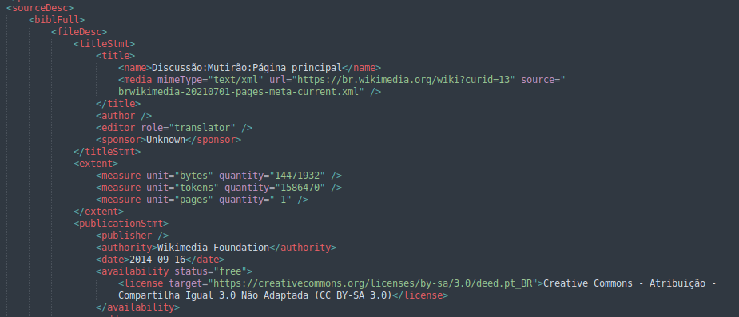
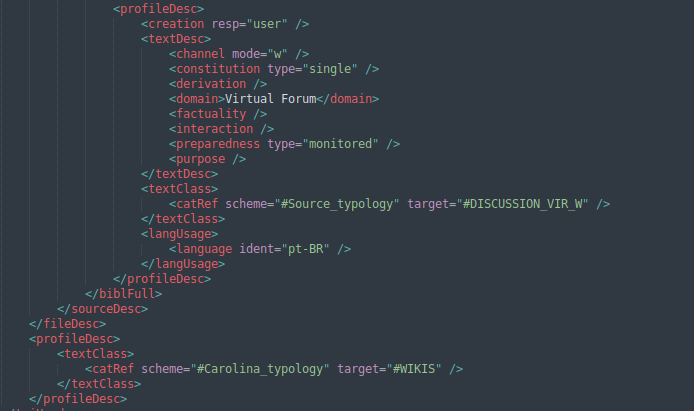

2 O papel dos dados no pré-treinamento de Grandes Modelos de Linguagem
“Em suma, tanto naquelas leituras se enfrascou, que as noites se lhe passavam a ler desde o sol posto até à alvorada, e os dias, desde o amanhecer até fim da tarde. E assim, do pouco dormir e do muito ler se lhe secou o cérebro, de maneira que chegou a perder o juízo.
Encheu-se-lhe a fantasia de tudo que achava nos livros, assim de encantamentos, como pendências, batalhas, desafios, feridas, requebros, amores, tormentas, e disparates impossíveis; e assentou-se-lhe de tal modo na imaginação ser verdade toda aquela máquina de sonhadas invenções que lia, que para ele não havia história mais certa no mundo.”
— Dom Quixote de La Mancha, Miguel de Cervantes (Cervantes, 1605)
2.1 Introdução
As palavras que iniciam este capítulo foram extraídas do célebre romance espanhol Dom Quixote de la Mancha, no qual Miguel de Cervantes narra a vida do fidalgo Alonso Quixano, um homem nobre de meia idade, que, de tanto ler romances de cavalaria, acreditou-se ele próprio um cavaleiro e engajou-se nas mais insanas desventuras.
Com sua obra, Cervantes nos alerta sobre o poder que a informação que consumimos tem sobre nós e sobre como, providos dos contextos certos (ou errados), podemos tomar um moinho por um gigante ou um gigante por um moinho.
Guardadas as devidas proporções, alguém interessado em treinar um grande modelo de linguagem, se depara com o mesmo problema: de que forma o enorme volume de textos usado no processo de treinamento pode afetar o modelo resultante? Quais aspectos desses textos influenciarão o modelo e suas capacidades? O que podemos (ou não) fazer em relação a isso?
Os grandes modelos de linguagem que temos a nossa disposição atualmente — baseados na tecnologia Transformer e suas variantes — possuem, pelo menos, duas etapas principais de treinamento: o pré-treinamento e o ajuste fino.
O ajuste fino corresponde ao processo que usualmente visualizamos, quando pensamos em treinar alguém para a realização de uma tarefa: a exposição do aluno a um conjunto representativo de exemplos de como realizar aquela tarefa corretamente.
Mas, para podermos ensinar a um ser humano uma tarefa específica, usualmente pressupomos que ele possua um amplo arcabouço de capacidades gerais prévias, inclusive as que permitam a ele se comunicar conosco e aprender a realizar tarefa em si.
Quando falamos de grandes modelos de linguagem, essas informações contextuais básicas são adquiridas na fase do pré-treinamento. É nessa fase que o modelo será exposto a grandes volumes de dados de linguagem — não anotados para uma tarefa específica, mas sim amostras abrangentes de como a linguagem humana funciona.
Durante o pré-treinamento, o modelo obtém valores para os seus parâmetros internos que vão permitir a ele usar palavras de acordo com seu significado apropriado, formar sentenças seguindo as regras sintáticas da língua, imitar estratégias discursivas como as usadas pelos seres humanos.
Muito mais do que isso, entretanto, os parâmetros dos modelos passam a encapsular, também, os vieses e conhecimento de mundo presentes nos textos, as estruturas das inferências neles realizadas, a maneira como eles se estruturam, variam, se adaptam, e as estratégias segundo as quais os textos armazenam, fornecem e transformam a informação neles contida.
Para o bem ou para o mal, as surpreendentes capacidades que os modelos de linguagem têm demonstrado nos últimos anos, são testemunhos de que eles aproximam — não só a gramática de uma língua e de como gerá-la — mas uma gramática de mundo, uma gramática das operações linguísticas que realizamos sobre a realidade e que a realidade realiza sobre a nossa língua.
Neste capítulo focamos, justamente, nessa fase do pré-treinamento de um grande modelo de linguagem. Tentamos, de forma breve, fornecer uma noção geral de como os dados usados influenciam no processo de pré-treinamento, nos modelos resultantes e nas suas capacidades e características. Como no restante do livro, daremos um foco especial para a língua portuguesa e para recursos para ela disponíveis.
Para tal, começaremos discutindo em que situações o pré-treinamento de um modelo se faz necessário (Seção Por que e quando pré-treinar?), apresentando em seguida os principais conjuntos de dados disponíveis para o pré-treinamento em português (Seção Conjuntos de dados para pré-treinamento em português). Iniciaremos então discussões acerca da natureza dos dados e quais principais aspectos devemos considerar na sua seleção, incluindo tópicos como a importância da curadoria (Seção A importância da curadoria de dados), da qualidade (Seção O impacto da qualidade dos dados) e da diversidade (Seção O impacto da diversidade dos dados) dos dados usados no pré-treinamento, além das principais problemáticas referentes à proveniência dos dados (Seção A questão da proveniência dos dados). Por fim, apresentaremos brevemente o corpus Carolina, como um estudo de caso de como tratar várias dessas questões em tempo de montagem de um corpus ou dataset para treinamento de modelos de linguagem (Seção O corpus Carolina como um estudo de caso).
Para acompanhar o texto, recomendamos a leitura prévia ou complementar do Capítulo Modelos de linguagem, que apresenta os modelos de linguagem e como eles funcionam, do Capítulo Conjunto de dados, dataset e corpus, que versa sobre corpora e datasets anotados para tarefas específicas — muitas vezes usados na etapa posterior do ajuste fino desses modelos — e do Capítulo Treinamento de Grandes Modelos de Linguagem na prática, que se aprofunda em técnicas e detalhes do treinamento e como essas podem impactar os produtos finais.
2.2 Por que e quando pré-treinar?
Como mencionado anteriormente, no paradigma vigente, o treinamento é constituído de dois estágios principais: o estágio do pré-treinamento envolve treinar uma grande rede neural em um conjunto vasto de textos de domínios e origens diversas — usualmente extraídos da web — para que o modelo aprenda a estrutura da língua (ou das línguas), além de obter conhecimento geral do mundo (Radford et al., 2018). O segundo estágio, do ajuste fino, envolve adaptar o modelo geral obtido para uma tarefa específica — como análise de sentimentos (Sun; Dredze, 2025) — usando dados anotados para aquela tarefa.
A decisão de pré-treinar um modelo de linguagem do zero ou de realizar o ajuste fino de um modelo pré-treinado já existente é uma das mais importantes no desenvolvimento de modelos de linguagem baseados em grandes redes neurais. Essa decisão representa uma troca entre eficiência e eficácia, já que o pré-treinamento de um modelo requer grandes volumes de dados e clusters de GPUs para processá-los, ao passo que o ajuste fino requer menos dados e menos processamento, a custa do controle sobre o modelo pré-treinado e o conteúdo usado para tal.
Em algumas situações, uma solução intermediária entre pré-treinar um modelo do zero e apenas ajustar um modelo já pré-treinado, é a de realizar um pré-treinamento continuado. Como o nome sugere, o pré-treinamento continuado consiste em continuar com o tipo de pré-treinamento inicial, mas com dados de linguagem mais específicos para a tarefa fim (Kerner, 2024). É pouco provável, por exemplo, que um modelo pré-treinado com dados da internet tenha recebido um vasto conhecimento de literatura biomédica, dessa forma se o objetivo final é classificar textos biomédicos, faz sentido, antes, apresentar ao modelo textos desse domínio. Entretanto, há possíveis desafios na introdução dessa nova etapa: ao treinar o modelo com novos dados ele pode acabar se esquecendo do conteúdo já aprendido, um fenômeno conhecido como esquecimento catastrófico (Mecklenburg et al., 2024); além disso, o tokenizador, peça fundamental para o modelo conseguir ler os textos, pode não estar ajustado para o léxico do domínio em questão, sendo necessário adaptá-lo primeiro, o que pode culminar na necessidade de um pré-treinamento completo (Gu et al., 2021).
Além da incapacidade de se adaptar o léxico, outra possível razão para realizar o pré-treinamento ocorre quando você precisa que o seu modelo seja executado utilizando baixos recursos computacionais, inferiores aos exigidos pelos modelos pré-treinados disponíveis, o que leva a necessidade de escolher uma arquitetura neural que ainda não foi nem pré-treinada para o idioma escolhido e muito menos adaptada para a tarefa desejada (Yao et al., 2022).
Uma situação semelhante surge quando a tarefa fim ou a arquitetura do modelo são fundamentalmente novas. O ajuste fino é um processo de adaptação, não de criação; ele refina comportamentos existentes, mas dificilmente consegue instilar capacidades inteiramente novas. Estudos mostram, por exemplo, que modelos pré-treinados podem ter dificuldades com tarefas que exigem raciocínio lógico complexo, como operações booleanas, mesmo após o ajuste fino, enquanto modelos treinados do zero para aquela tarefa específica podem apresentar um desempenho superior (Jensen; Plank, 2022).
A própria estrutura dos dados da tarefa pode, também, justificar um novo pré-treinamento. Pesquisas recentes demonstram que alinhar os dados de pré-treinamento com os da tarefa final desde o início é computacionalmente mais eficiente, podendo atingir o mesmo desempenho com uma fração dos recursos (Mizrahi et al., 2025).
O pré-treinamento do zero também se justifica quando é necessário alterar a arquitetura para comportar parametrizações distintas, como um contexto maior, por exemplo (Li et al., 2022). Além da arquitetura, os próprios objetivos de treino podem justificar um novo pré-treinamento. Os objetivos padrão mais comuns são o MLM (Masked Language Model, ou Modelo de Linguagem Mascarado), no qual o modelo aprende a prever tokens que foram aleatoriamente ocultados (mascarados) no texto de entrada, e o CLM (Causal Language Model, ou Modelo de Linguagem Causal), onde o modelo é treinado para prever o próximo token em uma sequência. Se a tarefa ou o domínio exigir um objetivo de treino fundamentalmente novo, que não se encaixe nesses moldes, o pré-treinamento do zero pode ser a única opção viável.
Talvez a razão mais comum e empiricamente validada para o pré-treinamento, no entanto, seja a incompatibilidade fundamental entre o domínio da aplicação e o conhecimento contido nos modelos de propósito geral. Um caso de estudo exemplar é o do PubMedBERT, um modelo pré-treinado do zero exclusivamente com textos da literatura biomédica. O primeiro problema que ele resolve é o da tokenização: modelos gerais quebram termos técnicos como “naloxona” em múltiplos fragmentos sem significado ([na, ##lo, ##xon, ##a]), diluindo sua representação semântica. Com um vocabulário próprio, o PubMedBERT trata “naloxona” como um único token, aprendendo uma representação mais rica e eficiente. Além disso, o conhecimento de um domínio geral pode ser irrelevante ou até mesmo prejudicial em um contexto especializado, um fenômeno conhecido como “transferência negativa”. Em uma vasta gama de tarefas de processamento de linguagem natural biomédica, o PubMedBERT superou não apenas os modelos de domínio geral, mas também modelos que passaram por pré-treinamento continuado, demonstrando o valor de construir uma nova base de conhecimento quando o domínio é suficientemente distinto (Gu et al., 2021).
Nas demais situações, a realização de um ajuste fino para a tarefa fim, com ou sem a etapa intermediária do pré-treinamento continuado, tende a ser a escolha mais razoável. Resumindo a discussão desta seção, o Quadro 2.1 apresenta os principais critérios para ajudar na decisão de pré-treinar ou não.
Se o leitor se encontrar numa situação onde o pré-treinamento é necessário, ele se deparará com um novo desafio: o da seleção de quais conjuntos de dados usar no pré-treinamento e de quais aspectos levar em conta para essa seleção. Para ajudar nesse processo, apresentamos, na seção seguinte alguns dos principais conjuntos de dados disponíveis para o pré-treinamento em português e, nas seções seguintes, discutimos quais aspectos levar em conta nessa seleção.
Quadro 2.1 Guia para avaliação se o pré-treinamento é necessário ou não.
2.3 Conjuntos de dados para pré-treinamento em português
Nesta seção, apresentaremos alguns dos conjuntos de dados disponíveis que podem ser usados para o pré-treinamento de modelos em português. Nossa apresentação visa fornecer um panorama geral ao leitor, sem pretender ser uma revisão exaustiva dos recursos disponíveis. Com esse objetivo, dividimos a apresentação em duas grandes categorias, acompanhando a criação de recursos para a língua portuguesa em diferentes momentos ao longo dos últimos vinte anos: (i) recursos gerais de conjuntos de dados multilíngues, com parte dos dados disponíveis em português; (ii) datasets desenvolvidos especificamente em – e para o – português.
2.3.1 Recursos gerais
Atualmente existem vários recursos multilíngues de propósito geral que podem ser usados para o pré-treinamento de grandes modelos de linguagem e aplicações similares. Eles podem ser úteis para pesquisadores interessados em treinar modelos multilíngues, mas também para aqueles que desejam focar em uma língua específica – no nosso caso, o português –, bastando extrair a parte dos dados referentes ao idioma de interesse. A seguir, apresentamos brevemente os seguintes recursos desse tipo: Common Crawl, OSCAR, HPLT, e os recursos da TenTen Corpus Family.
A partir dos anos 2000, vimos um esforço de projetos voltados ao acesso a dados da web. Um dos principais representantes dessa categoria, o Common Crawl (Common Crawl, [s.d.]), fornece um repositório aberto com “fotografias” do conteúdo de páginas web desde 2008, chegando a petabytes de dados. A ideia é disponibilizar o conteúdo da maneira como foi publicado, focando especificamente em preservar o código HTML das fontes, e disponibilizá-lo no formato WARC (Web ARChive) para que informações sobre a requisição e seus metadados estejam também acessíveis, armazenando inclusive as interações entre o servidor e o(s) web crawlers. A organização geral desses dados não é orientada pela língua em que estão escritos, mas pelo ano em que determinado batch foi coletado da internet.
De 2013, o TenTen Corpus Family (Jakubček et al., 2013) é uma família de corpora que também parte da proposta da coleta de uma grande quantidade de dados disponíveis na web, mas com o diferencial de incorporar apenas conteúdo com valor linguístico para mais de 50 línguas. O corpus voltado para o português inclui as variedades europeia e brasileira e possui quase 17 bilhões de palavras coletadas entre agosto de 2020 e novembro de 2023. Além da anotação morfossintática (part-of-speech), possui também anotação de gêneros do discurso e classificação em tópicos. Diferente do Common Crawl, não é um corpus aberto, sua versão completa pode ser acessada mediante pagamento.
Com sua primeira publicação em 2019, o OSCAR (Open Super-large Crawled Aggregated coRpus) (Abadji et al., 2022) também é um grande projeto de coleta de dados da web por meio de crawlers. Trata-se de um corpus multilíngue de código aberto, voltado para aplicações em inteligência artificial e aprendizado de máquina. O OSCAR busca dar especial atenção a comunidades linguísticas com poucos recursos disponíveis e atualmente disponibiliza dados em 166 línguas, incluindo o português.
O projeto High Performance Language Technologies (HPLT) (Burchell et al., 2025), que teve sua primeira publicação de datasets em 2024, tem como objetivo reunir um grande volume de dados em diversas línguas para computação de alta performance, visando produzir modelos de linguagem e tradução. A versão mais recente de seus conjuntos de dados está disponível sob a licença Creative Commons CC0 e conta com 4,5 petabytes de dados da web comprimidos, majoritariamente advindos do Internet Archive e Common Crawl. O foco da nova versão está na maior qualidade dos textos para treinamento de modelos, buscando diminuir ruído e duplicação. Dados em português estão disponíveis no dataset monolíngue do HPLT, monoHPLT-PT, contando com 470,63 milhões de documentos e 203,71 bilhões de palavras no subconjunto deduplicado e 237,81 milhões de documentos e 146,27 bilhões de palavras no subconjunto deduplicado e com artefatos ruidosos removidos.
2.3.2 Recursos para o português
Agora, apresentaremos corpora desenvolvidos exclusivamente para a língua portuguesa. Apesar de não cobrirem outras línguas, eles oferecem um panorama muito mais diverso do próprio português. Assim como nos recursos gerais, passaremos brevemente por recursos construídos ao longo dos últimos anos, como a Linguateca, o Corpus do Português, o brWaC e o BlogSET-BR, para depois mencionarmos recursos mais recentes, que já surgem em resposta à revolução dos grandes modelos de linguagem.
A Linguateca (Santos, 2000) é uma organização virtual que concentra recursos disponíveis para o processamento computacional da língua portuguesa. Por ser um conjunto bastante diverso de recursos, destacaremos aqui apenas alguns dos subcorpora mais relevantes no que tange ao volume de dados:
O Corpus do Português é um corpus anotado que permite buscas por palavra, frase, classe de palavra (part-of-speech), entre outros, e se divide em três subcorpora: (1) “Genre / Historical” é o braço histórico, criado em 2006, com textos de 1200 a 1900 e 45 milhões de palavras; (2) “Web / Dialects” (Davies; Ferreira, 2016) contém 1 bilhão de palavras obtidas a partir de páginas da web de quatro países lusófonos, seu diferencial sendo a possibilidade de comparar dialetos; (3) “NOW (2012 - 2019)” (Davies; Ferreira, 2018) tem textos dos mesmos países, mas cobrindo o período de 2012 a 2019.
O Corpus Brasileiro (Sardinha et al., 2010) é um conjunto de aproximadamente um bilhão de palavras do português brasileiro escrito e falado, com anotação sintática e alguma anotação semântica, além de atributos de gênero discursivo.
O Brazilian Portuguese Web as Corpus (brWaC) (Wagner Filho et al., 2018) é um corpus construído seguindo a estrutura WaCky. O WaCky (The Web-As-Corpus Kool Yinitiative) consitui ferramentas e interfaces que facilitam o uso de web crawlers por linguistas, para processar, indexar e pesquisar dados disponíveis na web. Na sua versão mais recente, disponibilizada em Janeiro de 2017 e disponível para download e navegação no NoSketch Engine (versão aberta do Sketch Engine), o brWaC possui 3,53 milhões de documentos e 2,68 bilhões de tokens, com anotação de 134 atributos textuais diferentes e classificação de acordo com o nível de legibilidade feito por modelos de aprendizagem de máquina.
O BlogSET-BR (Santos et al., 2018) é um dataset para o português brasileiro, voltado para a linguagem gerada por usuários para o ambiente virtual: é uma grande coleção de publicações feitas em blogs, com 2,1 bilhão de palavras extraídas de 7,4 milhões de publicações em mais de 808 blogs brasileiros. Um diferencial desse corpus é a informação sobre autoria vinculada aos textos.
Os conjuntos de dados listados até aqui, são conjuntos mais clássicos, desenvolvidos ao longo das últimas décadas, que permaneceram relevantes até os dias de hoje. Com a revolução dos grandes modelos baseados na tecnologia Transformer, entretanto, cresceram também os recursos disponíveis para o português. Nesse sentido, diversos conjuntos têm sido desenvolvidos voltados especificamente para o treinamento desses tipos de modelos, entre as contribuições mais recentes destacamos:
Carolina (Crespo et al., 2023; Finger et al., 2020): um corpus aberto do português contemporâneo (1970-2021) com informações de procedência e tipologia. A versão mais recente, 2.0 Bea, possui 2,1 milhões de documentos e 1,2 bilhões de tokens. O corpus busca construir uma base de dados a partir de critérios definidos previamente, com controle sobre as fontes, gêneros textuais, data de publicação e metadados associados. Falaremos do Carolina com um pouco mais de profundidade nas próximas seções.
Aroeira (Lira et al., 2024): um corpus curado, que contém 35,5 milhões de documentos e mais de 15,1 bilhões de tokens, com foco na qualidade dos dados, a serem usados para a tarefa de treinamento de modelos;
GigaVerbo (Corrêa et al., 2025): um dataset que contém 145 milhões de documentos e concatena uma grande quantidade de outros corpora, inclusive alguns mencionados ao longo deste texto. Foi desenvolvido especificamente para o treinamento dos modelos da Família Tucano;
LegalPT (Garcia et al., 2024): é um agregador de datasets jurídicos disponíveis publicamente em português, com 24.194.918 documentos em sua versão atual, que se difere dos demais por essa especialização em documentos jurídicos. Vemos também, em decorrência dessa especialização, o esforço de endereçar a questão da repetição dos documentos em corpora jurídicos com a construção de sua versão deduplicada, o LegalPT (deduplicated).
2.4 A importância da curadoria de dados
Na seção anterior, apresentamos alguns dos principais conjuntos de dados disponíveis atualmente para o pré-treinamento em português. Dependendo da aplicação de interesse, um pesquisador pode adotar uma ou mais dessas fontes, ou desenvolver um conjunto de dados próprio, que pode incluí-las ou não. Em qualquer um desses casos, é importante refletir sobre o processo de curadoria de dados que serão usados, adaptando-o ao uso ou projeto específico. Vale, portanto, pararmos para discutir, mesmo que brevemente, como entendemos a curadoria de dados e qual a sua importância.
A construção de conjuntos de dados para o português é uma etapa essencial no desenvolvimento de tecnologias de processamento da linguagem, como discutido no Capítulo Conjunto de dados, dataset e corpus. No entanto, mais do que simplesmente acumular grandes volumes de texto, é fundamental considerar a curadoria desses dados. A promessa de uma curadoria cuidadosa é justamente a de garantir não apenas quantidade, mas também qualidade, diversidade e representatividade nos corpora utilizados para treinar e avaliar modelos.
Embora seja tecnicamente possível extrair textos em grande escala da internet, esse caminho apresenta uma série de desafios. A coleta bruta de dados traz consigo artefatos ruidosos (como tags HTML no meio do texto), duplicação, vieses negativos, problemas de direitos autorais e excessos ou lacunas linguísticas que podem comprometer a confiabilidade do conjunto final — o que, por sua vez, levanta questões sobre qualquer modelo treinado sobre ele.
Além disso, a ausência de filtros rigorosos pode fazer com que textos de baixa qualidade ou pouco relevantes ocupem espaço significativo no corpus resultante da coleta, prejudicando análises e aplicações práticas, além de acarretar maiores custos de desenvolvimento e manutenção.
Nos dias de hoje, entretanto, essa preocupação vai além dos problemas imediatos de qualidade e ganha contornos ainda mais críticos com descobertas recentes: um estudo publicado em julho 2024 na revista Nature (Shumailov et al., 2024) analisou os impactos de treinar ferramentas de Inteligência Artificial com dados gerados a partir delas. Conduzido por pesquisadores de instituições dos EUA, Reino Unido e Canadá, o trabalho mostrou que, após alguns ciclos de treinamento com esse tipo de dado, os modelos começam a cometer erros significativos e, em estágios mais avançados, passam a produzir informações incoerentes, num processo denominado “colapso” do modelo.
Segundo Ilia Shumailov (Shumailov et al., 2024), isso ocorre porque os dados não “compreendidos” pelo modelo original ficam sub-representados na linguagem gerada, então esse fenômeno de sub-representação vai se propagando, até que os erros se multiplicam a ponto de inutilizar os modelos. Esse risco ilustra a gravidade de se trabalhar com corpora não controlados, já que qualquer aplicação que faça uso desses dados pode estar comprometida. Em especial, com a massificação do acesso a ferramentas de IA gerativa, torna-se cada vez mais difícil garantir que os textos coletados sejam de autoria exclusivamente humana — sobretudo aqueles produzidos a partir de 2022.
A curadoria atua, então, como um mecanismo de controle da qualidade dos dados: assegura a representatividade dos diferentes registros do português, reduz a presença de ruídos e vieses, e garante que os textos utilizados respeitem critérios éticos e metodológicos. Mais do que um simples repositório, o conjunto de dados se torna um recurso confiável para pesquisa e desenvolvimento em PLN.
Os fatores mencionados demonstram que, no cenário atual, a curadoria meticulosa não é um luxo, mas uma condição fundamental para o avanço da área. Nas seções seguintes nos aprofundamos em alguns desses aspectos.
2.5 O impacto da qualidade dos dados
Na Seção Por que e quando pré-treinar?, discutimos como o pré-treinamento de um modelo de linguagem de ponta requer uma grande quantidade de dados textuais que, como visto na Seção Conjuntos de dados para pré-treinamento em português, é muitas vezes proveniente da web. Sabemos que a web abriga conteúdos diversos, produzidos por diferentes públicos para diferentes fins e pode conter informações contraditórias ou desnecessárias para um determinado objetivo. Logo, no processo de preparação dos dados, é necessário garantir a qualidade dos textos que serão usados para treinar os modelos.
Mas o que é exatamente um texto de qualidade? Para os objetivos desta seção consideramos que um texto de qualidade é um texto escrito por um ser humano e que passou por um processo de seleção (Albalak et al., 2024). A seleção, por sua vez, costuma se orientar em três dimensões principais: a de relevância, a de eficiência, e a de segurança.
Essas dimensões de qualidade podem ser avaliadas tanto de forma extrínseca quanto intrínseca. A avaliação extrínseca mede o impacto dos dados no desempenho de um modelo já treinado, como, por exemplo, avaliar se um modelo treinado nesse corpus se torna mais propenso a gerar textos tóxicos. Já a avaliação intrínseca analisa características diretas do corpus; por exemplo, calcular a porcentagem de documentos duplicados (uma medida de eficiência) ou a frequência de termos de uma lista de bloqueio (uma medida de segurança). Nesta seção, focaremos apenas nas formas intrínsecas, que melhor se encaixam no escopo deste capítulo.
A primeira dimensão de qualidade é a da relevância. Um texto é dito relevante se ele está relacionado com a distribuição da tarefa a ser desempenhada pelo modelo, e se ele pode aumentar a sua capacidade. No contexto médico, uma lista de nomes de medicamentos pode apresentar termos que estão na distribuição desejada, porém ter somente o nome deles dificilmente aumentará a capacidade do modelo. Textos onde os nomes dos medicamentos aparecem acompanhados de uma descrição de efeitos colaterais são melhores já que apresentam mais informação relevante. Da mesma forma, um texto extraído da internet pode conter trechos de rodapé, de cabeçalho, de margens, ou de botões que não tem nada a ver com o conteúdo principal. E, antes de tudo isso, o texto está escrito em português?
Boa parte da adequação de idioma pode ser feita por meio dos metadados. Com eles é possível filtrar documentos cujo endereço pertença a um país lusófono, como feito no brWaC (Wagner Filho et al., 2018). De maneira alternativa ou complementar, classificadores automáticos podem ser utilizados (Albalak et al., 2024), como o FastText (Joulin et al., 2017), usado na construção do corpus Aroeira (Lira et al., 2024). Já para garantir que não há ruído semântico, pode-se utilizar heurísticas (Albalak et al., 2024) como a presença de textos comuns em cabeçalhos e rodapés (ex: “Leia mais...”), a razão entre símbolos e palavras, o comprimento das sentenças e dos parágrafos, ou a repetição de n-gramas (Weber et al., 2024).
Além das heurísticas, a relevância semântica também pode ser avaliada com modelos. Uma abordagem comum é treinar um classificador para distinguir entre documentos de um corpus de referência de alta qualidade (com um “sinal positivo”) e documentos de um corpus mais ruidoso (com um “sinal negativo”) (Albalak et al., 2024; Wenzek et al., 2020). Outra alternativa é usar um modelo de linguagem para medir a perplexidade do texto (Touvron et al., 2023), uma medida de quão surpreendente ele é, dado o conhecimento prévio de como os elementos linguísticos usualmente se distribuem dentro de um texto naquela língua. Nesse modelo, parágrafos com baixa perplexidade (menos surpreendentes) são considerados de maior qualidade (Wenzek et al., 2020).
Na segunda dimensão, a de eficiência, o objetivo é garantir que o conjunto dos dados torne o treinamento mais eficaz possível por meio do controle da redundância dos dados. Para isso costuma-se remover textos duplicados e trechos muito frequentes. Essa remoção faz com que o tempo de treinamento seja melhor usado, focando em conteúdo não-repetido (Lee et al., 2022) e, crucialmente, reduz a contaminação entre os conjuntos de treinamento e de teste (Longpre et al., 2025), o que permite uma avaliação mais robusta do modelo.
Há várias maneiras de remover conteúdo duplicado. Para uma remoção exata, o hashing pode ser utilizado para acelerar a computação (Wenzek et al., 2020). Também é possível utilizar o número de n-gramas em comum, e até mesmo a similaridade semântica calculada com modelos já treinados para remover documentos “quase idênticos” (Albalak et al., 2024; Lee et al., 2022).
Por fim, a terceira dimensão, a de segurança, tem como objetivo garantir que o modelo final siga os padrões de observância designados (Albalak et al., 2024; Longpre et al., 2025). A ideia é que um modelo é tão seguro quanto os dados utilizados para treiná-lo. As principais motivações estão em garantir que o conteúdo proteja a privacidade, siga padrões de observância, e que não seja tóxico. Aqui diremos que é tóxico qualquer conteúdo rude, desrespeitoso ou que contenha linguajar que faça uma pessoa desistir de um diálogo (Longpre et al., 2024, 2025; Rae et al., 2022). Já o conteúdo explícito pode incluir material pornográfico, violento, discriminatório, ou com viés de gênero e racial (Albalak et al., 2024; Lira et al., 2024).
As formas mais comuns para remover conteúdos indesejados consistem na utilização de listas de bloqueio de endereços web (fontes conhecidas por esse tipo de conteúdo) ou listas de bloqueio de palavras e expressões (Albalak et al., 2024). Esta última contém termos que, se presentes no texto, farão com que o documento inteiro seja descartado, como feito no T5 (Raffel et al., 2023) e no Aroeira (Lira et al., 2024). Como para as outras dimensões, também é possível utilizar aqui classificadores automáticos treinados para identificar toxicidade (Albalak et al., 2024). Já para garantir a privacidade, há ferramentas para remoção de nomes próprios, de endereço postal ou de e-mail, e de números de identificação pessoal.
2.5.1 O custo da qualidade
É importante ressaltar que a busca por qualidade dos dados não é absoluta e nem deve ser. Esta busca apresenta dois desafios centrais: a impossibilidade prática de uma filtragem perfeita, e o fato de que a remoção total de certos fenômenos pode ser indesejável para os objetivos do modelo.
2.5.1.1 Quanto à impossibilidade
Em primeiro lugar, independente do nível de esforço dos desenvolvedores, todas as etapas de tratamento mencionadas utilizam modelos computacionais propensos a falhar, em especial quando estamos falando de um volume de textos tão imenso e diverso, que não pode ser verificado manualmente.
Pensando em heurísticas, um filtro que elimina textos com linhas muito curtas pode fazer com que textos como canções e poemas sejam descartados erroneamente (Abadji et al., 2022; Albalak et al., 2024). Já listas de bloqueio de palavras podem fazer com que conteúdos legítimos de domínios como jurídico, médico ou produzido pela comunidade LGBTQIAPN+ sejam removidos por não levar em conta o contexto no qual as palavras aparecem (Kreutzer et al., 2022; Xu et al., 2021).
Os classificadores automáticos também podem cometer erros de classificação. Um modelo para reconhecer português, por exemplo, pode acabar descartando um texto regional caso não tenha sido treinado com dados da região em questão (Albalak et al., 2024), ou seja, se os textos apresentarem uma distribuição linguística distinta daquela dos dados de treinamento (Blodgett et al., 2020).
2.5.1.2 Quanto à totalidade
Em segundo lugar, como discutimos anteriormente, quando estamos falando de pré-treinamento, estamos falando sobre ensinar a um modelo como a língua é usada, para que depois ele possa usar essa habilidade básica na resolução de tarefas específicas. Repetições e redundâncias são em algum nível parte da linguagem humana e, muitas vezes, nós mesmos usamos esse tipo de fenômeno para entender quais frases e expressões são mais comuns em determinados contextos e devem ser utilizadas em contextos similares. Há evidências de que manter um certo nível de duplicação é importante para o desempenho do modelo (Albalak et al., 2024; Lee et al., 2022).
De forma análoga, quando o objetivo final do modelo é uma tarefa específica, a remoção total de certos dados pode ser contraproducente. Se estivermos interessados em desenvolver um modelo que seja capaz de detectar textos tóxicos, a presença de amostras desse tipo de texto no pré-treinamento pode ser útil (Longpre et al., 2024, 2025). Isso permitiria ao modelo aprender os padrões de linguagem associados à toxicidade, que ele poderá usar posteriormente para aprender a detectar esse tipo de texto.
2.5.2 Considerações finais desta seção
Nesta seção, foram abordadas algumas dimensões referentes à qualidade dos dados. Em resumo, um dado de qualidade é aquele que é relevante, eficiente, e seguro, mas qual o nível de relevância, eficiência e segurança que podemos garantir pode variar bastante em função dos objetivos e das ferramentas que temos à disposição. No processo de falar sobre qualidade, acabamos tocando em tópicos relacionados a diversidade e a proveniência dos dados. Discutiremos esses aspectos nas próximas seções.
2.6 O impacto da diversidade dos dados
Além da qualidade dos dados e suas várias dimensões, que discutimos na seção anterior, outro aspecto importante de considerarmos ao selecionar datasets ou corpora para o pré-treinamento de modelos de linguagem é o da diversidade linguística.
Muitas vezes, quando falamos de diversidade linguística, a primeira coisa que nos vem à mente são as diferenças entre línguas, como a inglesa e a portuguesa, ou de forma mais ampla, entre famílias linguísticas distintas, como a indo-europeia — que contém as línguas inglesa e portuguesa — e a família afro-asiática — que inclui línguas como o hebraico e o egípcio.
Por conta dessa intuição, podemos tomar a preocupação com diversidade linguística como um problema restrito a modelos multilinguísticos, treinados com dados de diversas línguas simultaneamente.
De fato, essa é uma questão fundamental no desenho e construção de modelos multilinguísticos, entretanto também o é na construção dos modelos monolinguísticos, voltados para uma língua específica, como no caso dos modelos especializados em português.
Isso porque o que entendemos como a língua portuguesa é, na verdade, um conjunto bastante diverso de manifestações linguísticas distintas que — apesar de encontrarem coesão nas regras básicas do português — estão submetidas a padrões e convenções significativamente diferentes.
Essas variações da língua podem se dar sobre diferentes dimensões. É comum que as pessoas deem maior atenção às dimensões de variação que elas entendam como marcas que as distinguam de outros grupos de usuários da língua. Esse é o caso de variações em função da distribuição geográfica, do grupo social e do período histórico (ver Wolfram (2006)).
Contudo, esse tipo de variação representa apenas uma parte do potencial de variação linguística de um idioma. Algumas dimensões de variação são mais dinâmicas, de forma que um único falante usualmente alterna entre variedades para fins distintos: esse é o caso da variação em registro, gênero e estilo, que definimos de acordo com Biber; Finegan (1994) e Biber; Conrad (2009):
Registro: variação segundo a situação em que a linguagem é produzida, refletindo situações comunicativas que se repetem de forma regular dentro de uma estrutura social (Exemplos são: registro da conversação pessoal, registro da comunicação em fóruns virtuais, registro da escrita em livros didáticos).
Gênero: variação segundo o tipo de mensagem e as convenções associadas à como aquele tipo de mensagem é construído (Exemplos são: entrada de enciclopédia, carta, manual, receita culinária.)
Estilo: variação segundo as preferências estéticas de quem produz, ou consome a linguagem, podendo essas preferências serem mais ou menos coletivamente alinhadas (Exemplos são: o estilo da terceira fase do romantismo, o estilo pessoal de Machado de Assis)
Quando olhamos com atenção, vemos que uma pessoa usa a linguagem de forma bem diferente quando no tribunal , ou quando conversando com os amigos num bar (variação em registro); quando está escrevendo uma carta formal ou uma receita de bolo (variação em gênero); quando procura escrever um poema árcade ou cubista (variação em estilo).
O mais interessante é que, em todos esses casos, a linguagem não apenas varia de forma dinâmica, mas exerce um papel contextual. Basta percebermos como usar a linguagem apropriada para um dos contextos mencionados em outro desses contextos causaria estranhamento.
Do mesmo modo que um ser humano precisa ser capaz de alternar entre essas diversas variedades, de forma a cumprir tarefas de naturezas distintas com as quais ele se depara no seu dia a dia, um modelo de linguagem — que tenha o propósito geral de auxiliar os seres humanos nessas mesmas tarefas corriqueiras — precisa, também ele, apresentar essa plasticidade linguística, e utilizar-se da capacidade de reconhecer e produzir a variedade da linguagem apropriada para o contexto em que ela será usada, com funções, convenções e marcadores estéticos apropriados.
O leitor pode, entretanto, concordar conosco em nosso argumento sobre a importância de expor um modelo de linguagem a esses níveis de variação linguística, mas se perguntar se o pré-treinamento é a fase apropriada para tal. Afinal, o pré-treinamento é o momento em que o modelo deveria capturar as estruturas linguísticas gerais do idioma e, para realizar tarefas específicas — como por exemplo, redigir uma petição jurídica — ele passará, posteriormente, por um ajuste fino específico para essa tarefa.
De fato, para a realização de uma tarefa-alvo, os modelos precisam passar por essa etapa de ajuste fino com dados específicos para aquela tarefa, como discutimos nas seções anteriores. E, quando falamos de tarefas voltadas para contextos bastante particulares — como é o caso do exemplo mencionado da escrita da petição jurídica — é de se esperar que o ajuste fino também forneça um direcionamento ao modelo sobre o uso específico da linguagem para a realização daquela tarefa.
Contudo, essa etapa de ajuste fino dificilmente será suficiente para a adequação da linguagem, sem que tenha havido representação dessa forma de usar a língua durante o pré-treinamento. Isso porque, as diferenças entre tais variedades intralinguísticas podem ser bastante sutis e pervasivas.
Sardinha et al. (2014) realizaram uma análise da variação da língua portuguesa em nível de registro, sobre um conjunto diverso de propriedades gramaticais anotadas de forma semi-automática, baseados na metodologia de Biber (1988). Sua análise identificou que os registros no português variam ao longo de seis dimensões funcionais distintas, caracterizadas por propriedades como uso de pronomes, preposições e artigos, classes verbais, nominalização do sujeito, entre outras.
Já Serras et al. (2024) investigaram a diferenciabilidade de domínios discursivos do português brasileiro, realizando uma análise estatística individual sobre as distribuições de várias propriedades, incluindo propriedades morfológicas, sintáticas e semânticas. Eles observaram que, apesar de alto grau de sobreposição, várias das propriedades estudadas eram estatisticamente distintivas entre os diferentes domínios discursivos analisados.
Resultados como esses são testemunhos empíricos de que a língua portuguesa não é um corpo homogêneo, mas sim, um conjunto de manifestações distintas com funções e histórias específicas, que se sobrepõe em diferentes graus para constituir o que entendemos como o nosso idioma. Essa heterogeneidade é muitas vezes sutil, mas transversal a diferentes níveis de análise, estando entranhada em diversas propriedades que definem a estrutura gramatical da língua.
Se o pré-treinamento é a etapa em que o modelo cria uma representação interna da língua e da gramática que a rege, é sim fundamental que essa etapa inclua um nível de diversidade linguística apropriado. É isso que permitirá encapsular nessa representação os elementos das várias sublínguas que compõe o idioma a ser dominado, elementos esses que estão entranhados em vários níveis da gramática da língua e que poderão ser posteriormente aproveitados pelo modelo na construção de habilidades específicas para contextos particulares.
2.7 A questão da proveniência dos dados
Proveniência, é o processo de rastreamento dos dados, ou seja, de suas origens e histórico de processamento1. Muitas vezes, em grandes corpora, é difícil de identificar de qual fonte um texto foi retirado, principalmente se os dados foram extraídos da web e processados em larga escala. Isso pode não só gerar um descumprimento acidental de direitos autorais dos textos originais, mas também uma dificuldade de manipulação desses dados por parte dos usuários. Ou seja, se por exemplo alguém não quiser utilizar textos de algum website específico ou tenha detectado um viés no modelo treinado, é mais difícil encontrar e retirar essas fontes indesejadas do conjunto textual caso não haja dados de proveniência marcados no corpus.
A questão dos direitos autorais e do respeito às licenças dos textos tem se tornado cada vez mais importante nos últimos anos, em especial depois da emergência de chatbots baseados em LLMs tão eficientes, como o ChatGPT, o Gemini e outras alternativas. Se antes os frutos desse desenvolvimento tecnológico tinham um papel mais restrito e indireto na vida das pessoas, eles passaram a estar presentes no dia-a-dia, gerar grandes receitas e ameaçar a substituição de muitos ofícios.
Essa possibilidade gerou um sentimento geral e justo de questionamento acerca dos impactos dessas tecnologias e da adequação da coleta de dados para seu desenvolvimento e treinamento. As questões envolvendo autoria de dados gerados por inteligência artificial e o uso adequado dos dados de treinamento invadiram tanto os tribunais como as mesas de bar.
É de se esperar que nos próximos anos, a sociedade encontre uma solução para esses debates. Até lá, o cuidado com a proveniência dos dados deve ser redobrado, tanto no sentido de garantir que os dados utilizados no treinamento tenham uma licença apropriada para a utilização a ser feita do modelo, como que sua fonte e licença sejam conhecidas, caso seja necessário remover esses dados no futuro, em função da evolução do nosso entendimento coletivo acerca de como tais dados podem ou não ser utilizados.
Um outro debate importante é o da licença dos próprios modelos produzidos a partir desses dados. Apesar de restrições diversas, os desenvolvedores de um modelo para fins de pesquisa usualmente têm a oportunidade de escolher a licença sob a qual o modelo será distribuído. Embora um debate nesse sentido esteja fora do escopo deste capítulo, recomendamos que os desenvolvedores de tais modelos pensem nessa questão com esmero, e sempre que possível, priorizem licenças de uso abertas que, ao mesmo tempo, visem coibir quaisquer usos nocivos.
Além disso, outra questão importante que vem à tona com o uso de textos da web para treinamento de modelos é o problema relacionado a dados pessoais e sensíveis e como tratá-los. Essa questão se tornou ainda mais relevante com o advento da Lei Geral de Proteção de Dados Pessoais (LGPD)2, que busca justamente regulamentar o tratamento desses dados. Apesar de não conseguirmos abordar com profundidade essa discussão neste capítulo3, vale destacar que a proveniência também se torna relevante nestas questões, pois sabendo de onde os dados vêm, é mais fácil identificar quais são os processos que precisam ser realizados para garantir a anonimização e remoção de dados pessoais dos textos.
2.8 O corpus Carolina como um estudo de caso
Nas seções anteriores, apresentamos diversos aspectos a serem considerados na construção de um conjunto de dados visando o pré-treinamento de modelos de linguagem. Gostaríamos de encerrar o capítulo fazendo uma breve apresentação do corpus Carolina. Esse é um corpus dual, construído visando tanto o treinamento de modelos de linguagem quanto a pesquisa linguística. Ele é uma tentativa destes autores e de seus colaboradores de conjugar vários dos aspectos discutidos neste capítulo na construção de um bom conjunto de dados. Essa não é uma empreitada fácil, já que muitas dessas restrições e objetivos competem entre si — vide como pode ser difícil garantir diversidade linguística e se ater a dados de licença aberta ao mesmo tempo — entretanto, acreditamos que o Carolina tem se tornado tanto um recurso útil por si só, como um protótipo para a construção de futuros recursos semelhantes.
O corpus Carolina4 (Córpus Geral do Português Brasileiro com Informações de Procedência e Tipologia) é um corpus aberto, desenvolvido por uma equipe multidisciplinar de Linguistas e Cientistas da Computação, que faz parte do desafio de NLP25 do C4AI (Center for Artificial Intelligence)6. O Carolina está em construção contínua desde setembro de 2020, sendo lançadas anualmente novas versões com melhorias desde março de 2022, data da publicação da versão 1.0 (Ada). A versão atual, 2.0 (Bea), é composta por mais de 2 milhões de textos e cerca de 1,3 bilhões de tokens. Todos os textos do corpus foram extraídos da web e são posteriores a 1970.
O corpus Carolina foi criado com o intuito de preservar informações de proveniência e de tipologia textual. Para alcançar esse objetivo, apresentamos um cabeçalho com metadados anotados em lotes de textos7, que conservam o máximo de informações que podemos obter de nossas fontes8 e seguem o padrão TEI (Text Encoding Initiative) (TEI Consortium, 2021).
Assim, informações como a licença e URL da fonte são obrigatoriamente anotadas de modo a garantir a rastreabilidade dos textos originais, bem como a conformidade com os direitos autorais de cada um. Na Figura 2.1 a tag “<license>” contém as informações da licença da fonte e “<media>” a URL do texto.

Também anotamos informações das duas tipologias textuais do corpus, a Tipologia Ampla, ou Tipologia do Carolina, que organiza os textos dentro da estrutura do corpus e a Tipologia da Fonte, que contém os termos utilizados pelas próprias fontes para se referirem aos seus textos. Além disso, anotamos o Domínio de cada texto, que entendemos como a esfera em que circulam (por exemplo: Acadêmico, Pedagógico, Comercial etc.). Na Figura 2.2 as tags “<catRef>” contêm os tipos amplos e da fonte e “<domain>” apresenta o domínio. Esses metadados nos fornecem informações importantes acerca do registro dos textos que compõem o Carolina e podem ser usados para mensurar sua diversidade linguística.

2.9 Considerações finais
Neste capítulo, apresentamos uma discussão acerca do papel dos dados no pré-treinamento de grandes modelos de linguagem. Discutimos as situações em que o pré-treinamento se faz necessário, alguns dos principais conjuntos de dados disponíveis para o pré-treinamento em português e os principais aspectos que alguém deve considerar tanto ao selecionar um conjunto de dados, quanto ao construir um conjunto de dados para pré-treinamento.
Esperamos que os pontos apresentados sejam úteis aos leitores que estejam interessados em desbravar essa árdua tarefa do pré-treinamento dos grandes modelos de linguagem. Se em algum momento você obtiver um modelo cheio de alucinações, apesar de todo o seu esforço na seleção de dados, não perca a esperança: lembre-se que até Dom Quixote acabou são no final.
Tratamos com mais detalhes a respeito de proveniência, direitos autorais e métodos de extração de textos da web em (Crespo et al., 2023).↩︎
O texto da lei pode ser conferido em: https://www.planalto.gov.br/ccivil_03/_ato2015-2018/2018/lei/l13709.htm↩︎
Para uma discussão mais ampla a respeito da LGPD e a Inteligência Artificial cf. (Lazzarini Moretti; Maltese Zuffo, 2025).↩︎
O nome do corpus é uma homenagem a Carolina Michaelis de Vasconcelos (1851-1925), filóloga e linguista alemã, radicada em Portugal, e primeira mulher a atuar como docente na Faculdade de Letras da Universidade de Lisboa, em 1911.↩︎
https://dev-c4ai.webhostusp.sti.usp.br/?page_id=6120&lang=pt↩︎
Para mais informações sobre a metodologia de extração e anotação dos dados do corpus Carolina cf. (Sturzeneker et al., 2022).↩︎
A lista completa de metadados que anotamos encontra-se em (Crespo et al., 2023, p. 13–14).↩︎